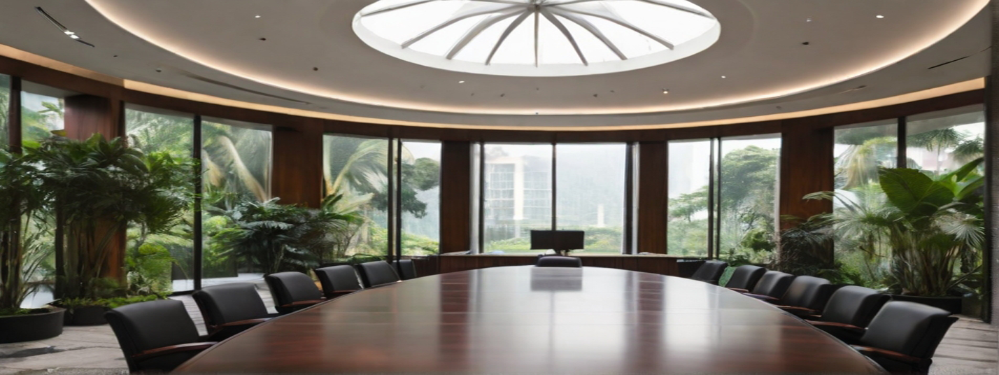
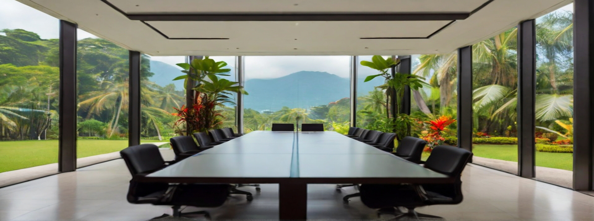
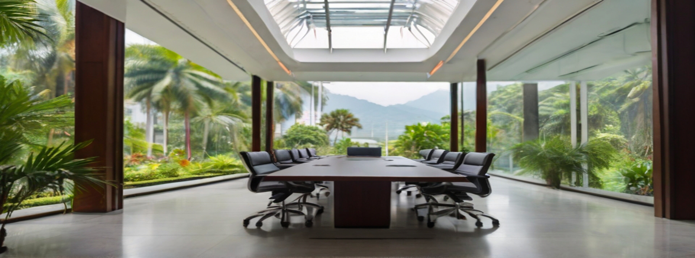
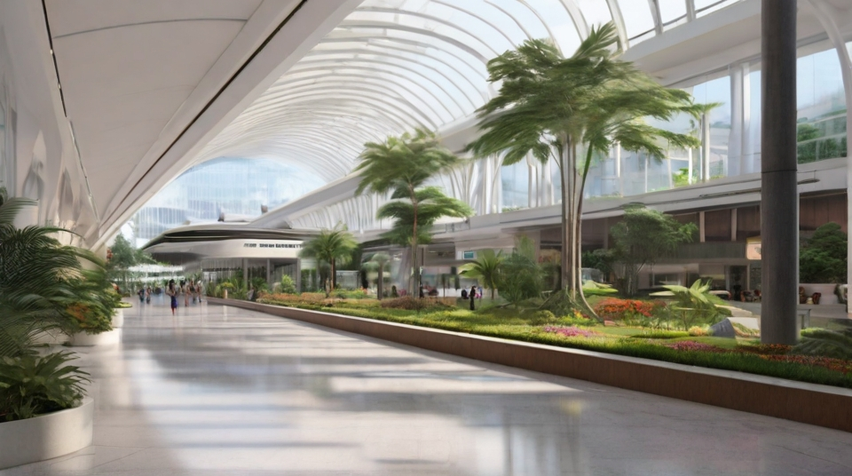
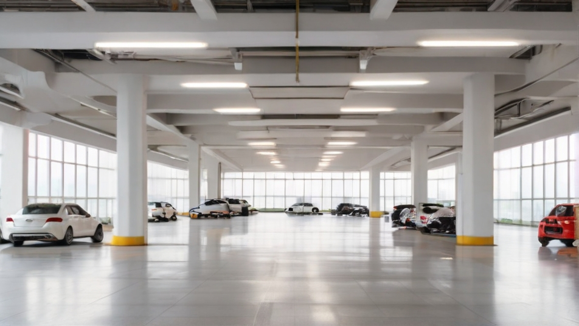

Why this design? What does it say about Penang?
• It looks regal, grand, stately.
• It looks like a government building.
• It has the design language of Penang architecture, such as being predominantly white, has straight pillars, as wood ascents.
• It looks like a heritage building yet modern and relavant. The glass adds a touch of contemporarism to it.
• It is a timeless design and wont get old or outdated.
• You can distinguish it as a Penang architecture rather than say a Singapore or Indonesian one.
• The plentifullness or plants and garden is also signature of Penangs architecture and environment. Singapore's enviroment usually have sparse greeneries or very organized and manicured plants.
Is it unique? Is it iconic?
• It is unique in that you don't see such designs around, yet it is not overly unique where it is oddly out of shape and place, or has become some experimental play piece scupture for some artsy architect who is trying too hard to be different or to impose his own brand and style onto the design
• It is also unique and regal that it frequently draws breath from anyone who lays eyes on it.
• I think it is also uniquely beautiful enough that it will join the ranks of some of the most iconic buildings in Penang."
What are some unique features of this building? Why is it better than the old Komtar?
• It features high ceiling because we believe high ceiling gives it prestige. It also looks better, more welcoming, and makes people feel at easy and can breath easily while in the building. People wont feel claustrophobic.
• It is built like Queensbay, 1st Avenue, Paragon and Gurney Plaza malls where it emphasis on the ease of finding your way around instead of complex pathways and alleyways where visitors can get lost or where it gets secluded because of lack of foot traffic.
• It has a mall-type building management to take care of the building and its aestethics, so that it wont fall into disrepair and becomes run-down.
How is the layout of the building? (concourse, retail outlets, cafes, etc)
How high is the concourse? How high is one level?
What are the features of the carpark?
• The carpark is built like 1st Avenue where the parking bays are wide, well lighted, the floor has a polished finish, and the driveway and slopes have a generous width that won't stresses out drivers when they park there. Getting from the car park should be a pleasure. 1st Avenues escalator and elevators from the carpark to the mall are also very well-designed, with them overlooking the streets below on one side.
How is the layout of the carpark?
• The carpark will be marked which section of the building they are in so that they can park closes to the place they want to go and just take the escalator to their nearest section. There will be multiple escalators leading up to different sections of the building.
Where are the entrance and exits of the carpark located?
• The carpark entrance for the employees and the public enters at the left side of the building and exits on the right side of the building. There are two entrances and exits. One for employees and one for the public.
Are the carpark multistory or underground or both?
• The carpark is both multistory and underground. The carpark occupies the 5th, 6th, 7th floor of the building, the 8th level is reserved for the mall
Are there separation between employees car park and public carpark?
• The carpark for the employees are on the back side while the car park for the public is located near the front side. Public carpark cannot access employees carpark for security reasons.
E-hailing / Taxi stands and drop-off area
• There will be an area with multiple stands for e-hailing pick-ups and drop-offs so that it won't congest the main entrace area.
Chief Minister's Office:
What are the improvements to Chief Minister's office?
Where will be the Chief Minister's office be located?
• The chief minister's office will be located at the section/building at the backend. The building will be a separated from the main public and service building for security purposes for the chief minister as well as for visiting foreign dignitaries.
How to make it impressive to foreign dignitaries?
• The chief minister's office will have a curved glass wall with a paranomic view.
Purpose and Functionality:
What is the primary purpose of the government building?
What functions and activities will be housed within the building?
How can the design facilitate efficient workflow and communication among different departments?
User Needs:
Who are the primary users and occupants of the building?
What are their specific spatial and functional requirements?
How can the design accommodate the needs of people with disabilities?
Symbolism and Image:
How should the building reflect the values and identity of the government it represents?
What visual symbols or architectural elements can be incorporated to convey a sense of authority and transparency?
• Competency: The layout of the building and its functionality i.e. the easy of access and use will reflect its competency
• Accountability: The tall pillars, white color reflects accountability.
• Transparency: The tall ceilings, open spaces, and glass reflects transparency.
• Harmony: The mix between glass, steel, concrete and wood materials will reflect the diversity and harmony that is found in Penang.
Sustainability:
How can the building be designed to be environmentally friendly and energy-efficient?
Are there opportunities for incorporating renewable energy sources or green building technologies?
Community Integration:
How can the design foster a sense of community and engagement with the public?
Are there public spaces or features that can be included to encourage civic participation?
Adaptability and Future Growth:
How flexible is the design to accommodate changes in government functions and organizational structures over time?
Is there room for expansion or modification as the needs of the government evolve?
Technological Integration:
What technological infrastructure is needed to support the functions of the government building?
How can technology be seamlessly integrated into the design to enhance efficiency and connectivity?
How can the design foster a sense of community and engagement with the public?
Are there public spaces or features that can be included to encourage civic participation?
Adaptability and Future Growth:
How flexible is the design to accommodate changes in government functions and organizational structures over time?
Is there room for expansion or modification as the needs of the government evolve?
Technological Integration:
What technological infrastructure is needed to support the functions of the government building?
How can technology be seamlessly integrated into the design to enhance efficiency and connectivity?
What technological infrastructure is needed to support the functions of the government building?
How can technology be seamlessly integrated into the design to enhance efficiency and connectivity?
• For service counters and queue system, a beeper like the ones provided in Gurney Plaza food court can alert the user when is their turn so that they can go drink at a nearby stall while waiting. Perhaps a queue counter could also be built into the beeper
• One of the main purpose of people going to this building is to pay bills. If there can be a central system where service counters can accept payments on behalf of different departments. Enquiries can be done at specific department counters themselves.
• Centralized apps with online payment systems can also help reduce the need to come to the government building itself.
Common Data Center and IT Management Office
• A common data center and IT management office will be located at the secure "CM Section" of the building.
• A fiber optic backbone will be wired throughout the building, so that any office in the building can acess the data center and the Internet.
• There will also be a fast public wifi for the public to access the Internet.
Aesthetics and Urban Context:
How does the design fit into the surrounding urban or natural environment?
• There will be a lot of foliage surrounding and within the building to simulate the signature environment that is Penang.
What aesthetic considerations should be taken into account to enhance the overall visual appeal?
•
More Questions:
In today's world a lot of answers are already out there.
The important thing is to ask the right questions.
• One way is we can think of the questions ourselves. The other way is to ask ChatGPT to help us ask the questions.
The Lobby
The lobby is strategically designed to seamlessly integrate with the breathtaking panorama of the tropical garden visible through the expansive floor-to-ceiling windows. The glass walls serve as a transparent canvas, offering an unobstructed view of the verdant landscape, where vibrant flora dances in the gentle breeze and sunlight bathes the garden in a warm glow. The lobby becomes a transitional space, effortlessly connecting the interior with the serene exterior.
A central reception desk, crafted with polished wood and sleek lines, stands as a focal point in the lobby. Behind it, a meticulously curated display showcases local art, cultural artifacts, and achievements, providing a visual narrative that reflects the region's heritage and identity. The fusion of modern design elements and traditional influences creates a sense of harmony and cultural richness.
The Garden
The lush tropical garden surrounding the government building in Penang, Malaysia, captivates the senses with its vibrant colors, exotic flora, and serene ambiance. As you step out onto the glass-walled balcony, you are greeted by an explosion of greenery that stretches out beneath the expansive Malaysian sky.
A meandering pathway, made of intricately patterned tiles, winds its way through the garden, guiding visitors on a leisurely stroll. Along the path, you encounter a mesmerizing array of indigenous plants and vibrant tropical flowers. Orchids dangle gracefully from the branches of trees, while colorful butterflies flit from one blossom to another, adding an extra layer of enchantment to the scene.
In the center of the garden, a tranquil pond reflects the azure sky above, its surface occasionally disrupted by the playful antics of koi fish. Water lilies and lotus blossoms float serenely, creating a picturesque tableau that mirrors the peace and harmony found within the heart of Penang. Stone benches strategically placed around the garden offer the perfect spot to pause, reflect, and appreciate the natural splendor that flourishes in this tropical oasis.
The Loft
The loft within the government building in Penang, Malaysia, is a marvel of modern design, seamlessly integrating with the natural beauty of its tropical surroundings. As you ascend the grand staircase, the air of sophistication becomes palpable, setting the tone for the loft's interior.
Tall ceilings adorned with elegant chandeliers create a sense of spaciousness, allowing ambient light to cascade down onto the intricately designed floor below. The loft features an open-concept layout, with polished marble floors that reflect the opulence of the space. Sleek, contemporary furniture is strategically arranged to maximize the panoramic view of the tropical garden visible through the expansive glass walls.
The glass walls, one side of the loft, serve as a transparent canvas that frames the lush greenery outside. The seamless integration of indoor and outdoor spaces blurs the boundaries, fostering a sense of connection with nature. The tropical garden below becomes a living tapestry, with sunlight streaming in to illuminate the loft and create a warm, inviting atmosphere.
The Foyer
A sleek, marble floor stretches beneath your feet, reflecting the ambient light that filters in through the floor-to-ceiling glass walls on one side. The glass walls provide an unobstructed view of the breathtaking tropical garden outside, creating a seamless connection between the interior and the vibrant natural world beyond. The play of sunlight enhances the foyer's atmosphere, casting soft shadows and illuminating the carefully curated elements within.
The focal point of the foyer is a meticulously crafted reception desk, adorned with polished wood and minimalist design. Behind it, a large, contemporary mural or artwork captures the essence of Penang's rich cultural heritage, welcoming visitors with a nod to the region's history and identity. Tall potted plants strategically placed throughout the space add a touch of greenery, seamlessly bridging the interior and the exterior.
The walls of the foyer are adorned with tasteful art installations and displays showcasing local craftsmanship and achievements. Ambient lighting fixtures hang from the ceiling, casting a warm glow that complements the natural light filtering in from the garden. Comfortable seating areas, featuring stylish and ergonomic furniture, invite guests to linger and appreciate the aesthetic harmony of the space.
The Chief Minister's Office
Located at the top floor, it overlooks the view at the bottom.
Offices
Conference Rooms
  The LRT Terminal Station
Place where the LRT stops
Parking
Better to have a multistory carpark or basement carpark?
Parking lots will be slanted to make parking easier. And there will be ample room for each bay. It will also follow the magnetic flow for easier navigation
